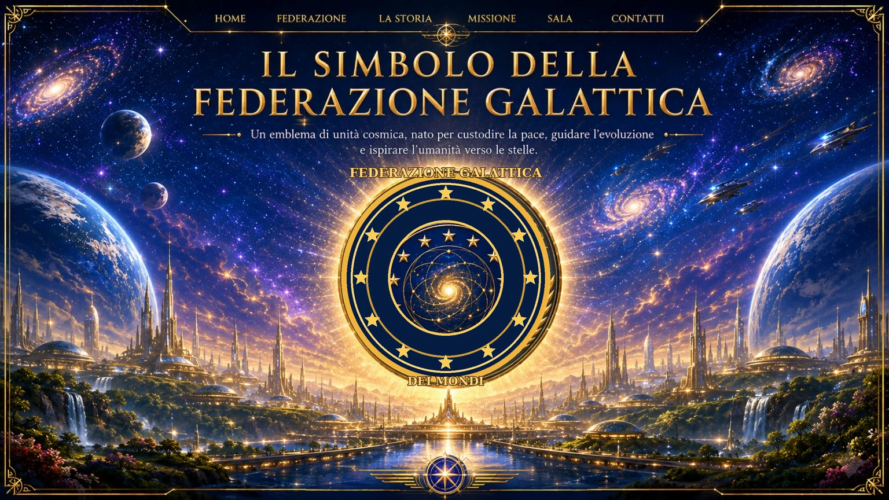
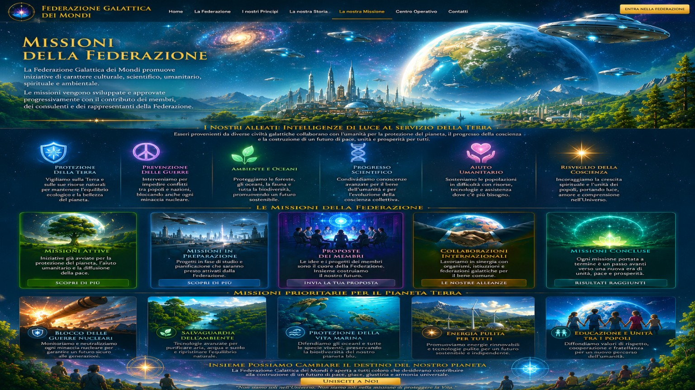

Il Simbolo
Un emblema di unità, pace e giustizia. Il cerchio principale contiene esattamente 12 stelle.


Dodici stelle
Il numero delle stelle del cerchio principale è fissato a dodici.
Federazione Galattica dei MondiUn emblema di unità, pace e giustizia. Il cerchio principale contiene esattamente 12 stelle.

Il numero delle stelle del cerchio principale è fissato a dodici.
